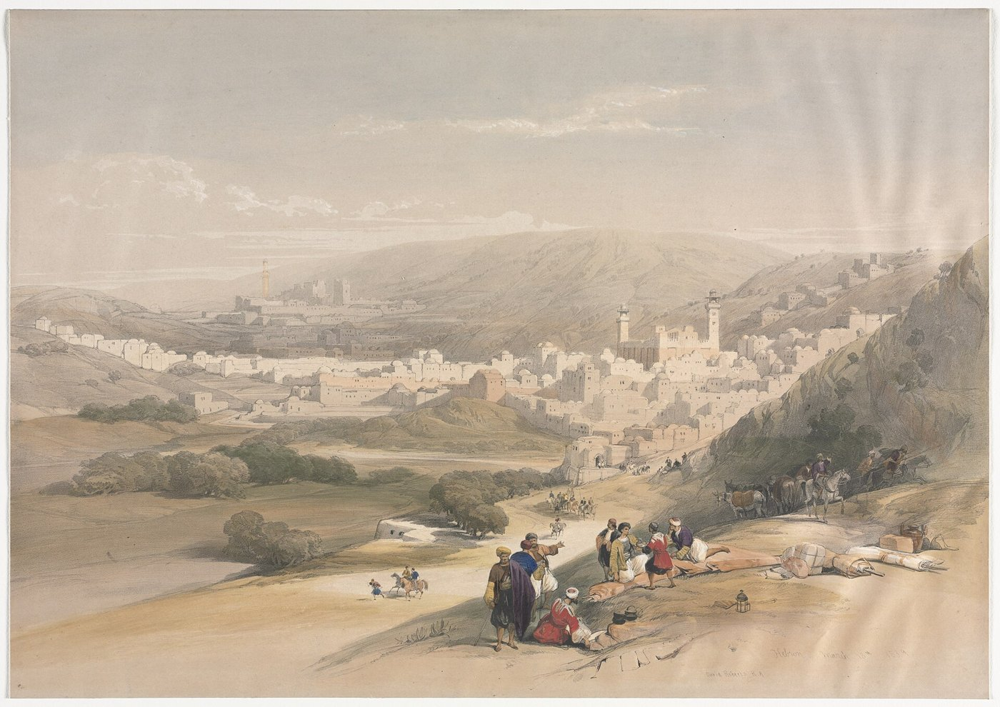

1 Chronicles 4 — The Mister Translation

1 Chronicles 4:40. Hebron is not named in this chapter; it is the town Caleb received (Joshua 14:13), and the chapter is full of Caleb’s and Judah’s clans. Roberts drew it from the road, with a wide valley and a quiet hill country around it, which is the nearest this note can come to ‘wide of hands, and quiet and at ease’ of the Simeonites’ pasture at Gedor. The town, the mosque with its towers (a later building) and the travelers are Roberts’s, from his journey of 1839.

Translator's Notes — verse by verse
⭐ Sons of Judah, as the Chronicler counts them. The list opens “the sons of Judah” and names Perez, Hezron, Carmi, Hur and Shobal; Perez is Judah’s son, and Hezron is Perez’s (Genesis 46:12, now on these pages), so the first word is used for descendants. The chapter’s own bookkeeping is by “father of”: Etam, Gedor, Hushah, Bethlehem, Tekoa, Ir-nahash, Ge-harashim, Soco, Zanoah, Eshtemoa, Keilah, Lecah, Mareshah are all people and places at once.
⭐ Ephrathah, Bethlehem, Tekoa. “The firstborn of Ephrathah” stands in two verses, 2:50 and here, and “the father of Bethlehem” stands in two verses, 2:51 and here: this Hur’s line is Bethlehem’s, the Ephrathah of Micah 5:1 and of Rachel’s grave (Genesis 35:19, both now on these pages; efrat). “The father of Tekoa” stands in two verses, 2:24 and here; Tekoa is the town of the shepherd Amos (Amos 1:1, now on these pages), and Ashhur has two wives, Helah and Naarah, with their sons counted separately. The KJV has “These are the sons of Hur, the firstborn of Ephratah, the father of Bethlehem”.
⚠ A written word and a read word. There are three ketiv/qere pairs in the chapter, kept in the Hebrew column: at verse 7 the consonants say Yitshar and the reading says Tsochar, at verse 20 Tolon and Tilon, and at verse 41 ha-me’inim and ha-me’unim (meunim). The written form of verse 7 stands in this one verse. This translation prints the read form. The KJV has “Zereth, and Jezoar, and Ethnan”, the NWT 1984 “Zeʹreth, Izʹhar and Ethʹnan” (the written form), the NIV “Zereth, Zohar, Ethnan” and the Douay “Sereth, Isaar, and Ethnan”.
⭐ A name from pain. “More honored than his brothers” stands in this one verse, nikhbad, the root of weight and glory; and “I bore him in pain” stands in this one verse. His mother is not named, and the name she gives is Ya’bets, whose three consonants are those of ’otsev, “pain”, in another order. The word is the one of the first labor: “in pain you will bring forth children” (Genesis 3:16, now on these pages; etsev, itsavon). The KJV has “And Jabez was more honourable than his brethren: and his mother called his name Jabez, saying, Because I bare him with sorrow”, the NIV “I gave birth to him in pain”, the NWT 1984 “I have given him birth in pain”, the Douay “Because I bore him with sorrow” and the TLB “because she had such a hard time at his birth (Jabez means “Distress”)”. The name is also a place, among the families of scribes at 2:55.
⭐ The prayer. “And Jabez called” stands in this one verse, “If you will indeed bless me” stands in this one verse, “and enlarge my border” stands in this one verse (gevul), “and your hand will be with me” stands in this one verse and “that it may not pain me” stands in this one verse: the prayer closes on the root of the name’s first word, ’atsvi, pain. ⚠ The first clause is im, “if”, and its other half is not said. The KJV has “Oh that thou wouldest bless me indeed, and enlarge my coast, and that thine hand might be with me, and that thou wouldest keep me from evil, that it may not grieve me!”, the ASV “Oh that thou wouldest bless me indeed, and enlarge my border”, the NIV “Oh, that you would bless me and enlarge my territory! Let your hand be with me, and keep me from harm so that I will be free from pain”, the NWT 1984 “If you will without fail bless me and actually enlarge my territory”, the Geneva “If thou wilt bless me in deed, and enlarge my coasts”, the Douay “If blessing thou wilt bless me, and wilt enlarge my borders” and the TLB “Oh, that you would wonderfully bless me and help me in my work”, which has no border in it.
⭐ And God brought what he asked. “And God brought what he had asked” stands in this one verse; the verb is vayavo, “brought”, where the KJV has “And God granted him that which he requested”, the NIV “And God granted his request”, the NWT 1984 “Accordingly God brought [to pass] what he had asked” and the Douay “And God granted him the things he prayed for”. The God of Israel is called on by title; the Name is not written anywhere in this chapter, in the prayer or outside it.
⭐ Kenaz, Othniel, Caleb. “Caleb the son of Jephunneh” stands in fifteen verses, among them Numbers 13:6 and 14:6 and here at verse 15; the sons of Kenaz at verse 13 are Othniel and Seraiah, and Othniel is the one who took Debir and won Achsah (Joshua 15:17, now on these pages). “Ir-nahash” stands in this one verse, the city of Nahash, at verse 12, and “Ge-harashim”, the valley of craftsmen, stands in this one verse, glossed in the same verse: “for they were craftsmen”. The KJV has “the father of the valley of Charashim; for they were craftsmen”, the NIV “It was called this because its people were skilled workers”, the NWT 1984 “for craftsmen are what they became” and the Douay “the father of the Valley of artificers: for artificers were there”.
⭐ The Judahite wife, and Bithiah. “The Judahite”, ha-Yehudiyyah, stands in this one verse (yehudiyah), said of one of Mered’s wives; and “the daughter of Pharaoh” stands in twelve verses, among them Exodus 2:5 (now on these pages), 1 Kings 3:1 and here, with Bityah, whose consonants are “daughter of Yah”. The shelf reads the first as a name, “Jehudijah” (KJV) and “Judaia” (Douay), or as a description: the NIV has “His wife from the tribe of Judah gave birth to Jered the father of Gedor” and the NWT 1984 “his Jewish wife”. The sons of Bithiah are “whom Mered took”: the KJV has “And these are the sons of Bithiah the daughter of Pharaoh, which Mered took”, the NIV “These were the children of Pharaoh’s daughter Bithiah, whom Mered had married” and the Douay “Bethia the daughter of Pharao, whom Mered took to wife”. The text does not say which wife bore which sons.
⚠ “Lords in Moab”. “who were lords in Moab” stands in this one verse; the verb is ba’alu, from baal, which means to be master and also to be a husband. The KJV has “who had the dominion in Moab”, the NIV “who ruled in Moab”, the Douay “who were princes in Moab” and the NWT 1984 “who became owners of Moabite wives”. Next is “Jashubi-lehem”, yashubi lachem, which stands in this one verse, a name or “they returned to Lehem”; a Bethlehem family that went to Moab and came back is the story of Ruth (Ruth 1, now on these pages), and some readers have put the two together, which the text does not do. And “and the records are ancient” stands in this one verse; the KJV has “And these are ancient things”, the ASV “And the records are ancient”, the NIV “(These records are from ancient times.)” and the NWT 1984 “And the sayings are of old tradition”.
⭐ Linen workers, and potters for the king. “The house of the work of fine linen” stands in this one verse, the families of Shelah, with Er father of Lecah and Laadah father of Mareshah. “The potters” stands in this one verse (yatsar; the potter’s house is the place of Jeremiah 18:2, now on these pages), and “those who dwelt among plantations”, yoshevei neta’im, stands in this one verse, which is either a description or the place Netaim; and they dwelt there im ha-melekh bimlachto, “with the king in his work”. The KJV has “those that dwelt among plants and hedges: there they dwelt with the king for his work”, the ASV “the inhabitants of Netaim and Gederah”, the NIV “They were the potters who lived at Netaim and Gederah”, the NWT 1984 “the potters and the inhabitants of Netaim and Gederah”, the Douay “they dwelt in Plantations, and Hedges, with the king for his works”, the Geneva “These were porters, and dwelt among plants and hedges” and the TLB “These clans were noted for their pottery, gardening, and planting”. The king is not named.
⭐ Shimei and his sixteen sons. “And Shimei had sons” stands in this one verse: sixteen sons and six daughters, where his brothers did not have many, and none of their families multiplied to the sons of Judah. Simeon is the tribe Jacob said he would divide and scatter (Genesis 49:7) and whose lot was “in the midst of the inheritance of the sons of Judah” (Joshua 19:1), both now on these pages. The KJV has “And Shimei had sixteen sons and six daughters: but his brethren had not many children”, the NIV “so their entire clan did not become as numerous as the people of Judah”, the NWT 1984 “none of their families had as many as the sons of Judah”, the Douay “could not reach to the sum of the children of Juda” and the TLB “they all had fewer children than was normal in Judah”.
⭐ The cities. Verses 28–33 list Beer-sheba, Moladah, Hazar-shual, Bilhah, Ezem, Tolad, Bethuel, Hormah, Ziklag, Beth-marcaboth, Hazar-susim, Beth-biri and Shaaraim, and the villages Etam, Ain, Rimmon, Tochen and Ashan; the list is the one of Joshua 19:2–8 with names changed (Bethuel for Bethul) and with no Sheba, and the five cities of verse 32 are the four of Joshua 19:7, “Ain, Rimmon, and Ether, and Ashan”, with Tochen and Etam where Joshua has Ether (all now on these pages). Ziklag is the one Achish gave David (1 Samuel 27:6, now on these pages). “until David reigned” stands in this one verse, and “and they have their genealogy”, the one word, stands in five verses, here, 1 Chronicles 7:7, 7:9 and 7:40, and Ezra 8:1. The KJV has “These were their cities unto the reign of David”, the NIV “These were their towns until the reign of David”, the NWT 1984 “These were their cities down till David reigned” and the Douay “These were their cities unto the reign of David”.
⭐ The princes, and their houses. Verses 34–37 are two lists of names, one ending with Ziza son of Shiphi son of Allon son of Jedaiah son of Shimri son of Shemaiah, the other with Joshah son of Amaziah and Jehu son of Joshibiah son of Seraiah son of Asiel. “broke out in multitude” stands in this one verse (the verb is paratz, to break through, as Jacob’s flocks “increased abundantly” in Genesis 30:30, now on these pages). The KJV has “the house of their fathers increased greatly”, the ASV “their fathers’ houses increased greatly”, the NIV “Their families increased greatly”, the Geneva “increased greatly their father’s houses” and the Douay “were multiplied exceedingly”.
⭐ Gedor, pasture, Ham. Gedor is a place here and a man at verses 4 and 18, father of Gedor. “Wide of hands” stands in five verses: Genesis 34:21, where the land is wide enough on both hands for Jacob’s sons (now on these pages), Judges 18:10, Isaiah 22:18, Nehemiah 7:4 and here; “and quiet and at ease” stands in this one verse, the quiet of Laish (Judges 18:7, now on these pages), which was taken by the Danites. “from Ham” stands in this one verse; Ham is the father of Cush, Egypt, Put and Canaan (Genesis 10:6, now on these pages). The KJV has “fat pasture and good, and the land was wide, and quiet, and peaceable; for they of Ham had dwelt there of old”, the NIV “the land was spacious, peaceful and quiet. Some Hamites had lived there formerly”, the NWT 1984 “the land was quite wide and having no disturbance but at ease” and the Douay “a country spacious, and quiet, and fruitful, in which some of the race of Cham had dwelt before”.
⭐ In the days of Hezekiah, and devoted to destruction. “in the days of Hezekiah” stands in two verses, here and 2 Chronicles 32:26. “The Meunim” stands in two verses, here, read, and 2 Chronicles 26:7, and the written form is ha-me’inim. “and devoted them to destruction until this day” stands in this one verse (cherem), and the chapter ends with the same words again, ad hayom hazeh, at verse 43. The KJV has “smote their tents, and the habitations that were found there, and destroyed them utterly unto this day”, the ASV “smote their tents, and the Meunim that were found there”, the NIV “They attacked the Hamites in their dwellings and also the Meunites who were there and completely destroyed them, as is evident to this day”, the NWT 1984 “strike down the tents of the Hamʹites and the Me·uʹnim” and the Douay “they beat down their tents, and slew the inhabitants that were found there”.
⭐ Mount Seir, and the remnant of Amalek. “the sons of Ishi” stands in three verses, 2:31, verse 20 and here, where four of them lead the five hundred; and Mount Seir is Edom’s mountain (Genesis 36:8, Deuteronomy 2:5, now on these pages). “the remnant of the escaped” stands in this one verse, of Amalek, whose remembrance Jehovah told Moses to blot out (Exodus 17:14, Deuteronomy 25:19, now on these pages), and the book that has just spent forty verses on names closes on a small war and a settling: vayeshvu sham ad hayom hazeh, “and they dwelt there until this day”. The KJV has “And they smote the rest of the Amalekites that were escaped”, the ASV “the remnant of the Amalekites that escaped”, the NIV “They killed the remaining Amalekites who had escaped”, the NWT 1984 “the remnant that had escaped of Amaʹlek”, the Douay “they slew the remnant of the Amalecites, who had been able to escape” and the TLB “There they destroyed the few surviving members of the tribe of Amalek”.
Patterns worth carrying forward
Where this translation keeps the words exact and distinct: “fathered” for holid and “the father of” for avi, which names towns as well as men; “pain” for etsev at verses 9 and 10, as in Genesis 3:16; “If” kept at verse 10 for im; “brought” for vayavo; “the Judahite” for ha-Yehudiyyah; “lords” for ba’alu; “devoted to destruction” for vayacharimum; “God” for Elohim, with the Name not written in this chapter. The Hebrew has three written and read pairs here, at verses 7, 20 and 41, kept as it is printed.
Echoes paid. Genesis 3:16, 10:6, 30:30, 34:21, 35:19, 36:8, 46:12 and 49:7; Exodus 2:5 and 17:14; Deuteronomy 2:5 and 25:19; Joshua 15:17, 19:1, 19:2–8 and 19:7; Judges 18:7; Ruth 1; 1 Samuel 27:6; Jeremiah 18:2; Amos 1:1; Micah 5:1.
Echoes planted. 1 Chronicles 2:24, 2:31, 2:50, 2:51, 2:55 and 7:7–9; 2 Chronicles 26:7 and 32:26; Ezra 8:1; Isaiah 22:18; Judges 18:10; Nehemiah 7:4. None of these is translated here yet.
⚠ A note on order: 1 Chronicles stands on these pages at chapters 1 and 4, chosen by how often a passage is read rather than in sequence. The sequential thread is unchanged: next in sequence is 1 Chronicles 2.